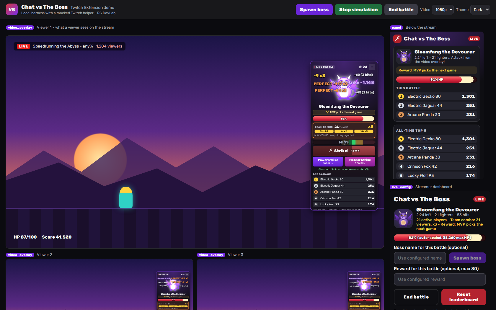

What I can do for you
-
Web apps & APIs
Node.js / PHP back ends, React or Vue front ends, SQL databases, Redis caching, deployment on Linux.
-
Real-time features
WebSocket dashboards and live updates — I've built real-time apps used during live broadcasts.
-
AI & automation
LLM integration into existing apps, n8n workflows, self-hosted AI agents that triage and act on data.
-
Odoo
Maintenance, custom modules, automations and integrations with third-party apps and shops.
Demo projects
Explore screenshots and source code where available. New demos are added as they are finished.
-
AI lead intake with n8n
An incoming email is summarised, categorised and scored 0–10 by an LLM (with a draft reply), saved to a table, and turned into a ready-to-send notification. Phishing and prompt-injection attempts are scored down instead of obeyed.
-
Chat vs The Boss — Twitch Extension

A cooperative Twitch mini-game: viewers team up to defeat a boss with timing strikes, team combos and dodges. Includes audience-based difficulty scaling, a live leaderboard, streamer controls and optional Twitch Bits attacks.
Personal project in Twitch Hosted Test; not publicly released. Screenshot from a local simulation with mock viewers and Bits. Source code is not published.
-
Odoo: shop order import
Custom Odoo module that imports orders from an online shop without creating duplicates, and creates the invoice automatically once the order is paid.
In progress
-
Lead Hunter — a self-hosted job-finding bot
A bot I run for myself: it collects project requests from several sources, lets an AI triage them, drafts bids and filters the inbox. Write-up of how it works.
Write-up in progress

Contact
The easiest way to reach me is a message on the platform where you found this link.